|

Model Alchemy Works Plesiosaur
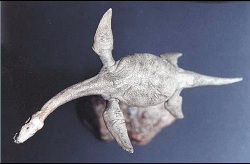
Kit #AW36
MSRP $109.95 $104.95 from Mega Hobby
Images and text Copyright © 2014 by Matt Swan
The Kit
This is not so much a kit as it is a large figure. It consists of only three pieces, the main body of the Plesiosaur, the lower jaw and a base piece. The figure is cast in a cream colored hard resin and has a small amount of seam showing around the body from a slight mold off-set. It's not very serious but should be cleaned up before any other work is done. There are also a few small cavities present along the mold separation line that have to be filled.  I found the best thing to do here was just to put a small amount of Bondo glazing putty on my fingertip and smear it into the cavity. This filled the area and left a textured surface behind. The teeth are fairly well done but could also use a small amount of clean up. There is a location hole centered in the figures belly and on the base for a mounting rod (not included with the figure). Fit of the jaw to the head of the figure is not that great and some large degree of shaving and sanding is needed to get it close then some putty will be required to smooth out the joint. I found the best thing to do here was just to put a small amount of Bondo glazing putty on my fingertip and smear it into the cavity. This filled the area and left a textured surface behind. The teeth are fairly well done but could also use a small amount of clean up. There is a location hole centered in the figures belly and on the base for a mounting rod (not included with the figure). Fit of the jaw to the head of the figure is not that great and some large degree of shaving and sanding is needed to get it close then some putty will be required to smooth out the joint.
Construction and Paint
Painting the inside of the mount I used a pink acrylic flesh tone that I mixed from a selection of Delta paints as a base then added some red to the base color to do the tongue. The teeth are simply acrylic white. Once the paint was dry the entire interior of the mouth was coated with Future floor polish then a coat of black sludge wash was applied. After this had dried I wiped the surfaces with a damp paper towel and attached the jaw to the head. Bondo body glaze was used to finish the joint and construction was complete. From here on out this is pretty much an exercise in paint.
It took a long time to settle on a color scheme for this build, I looked over several internet artist conceptions (not like I can go to the Cleveland Aquarium and look at the real thing) and finally settled on a brown scheme that caught my eye. Sadly I did not bookmark the image and only saw it for a moment then could never find it again so all I had to work with was a fleeting glimpse and a memory. Sounds like a Loche Ness sighting doesn't it? Okay, so let the painting begin.
My first consideration was to make a logical blended transition from a light belly color to the darker top colors. First some British Sky was laid down along the lower surfaces and crawling up the sides. Once this was dry I moved on to some Testors flat light brown and outlined my basic camouflage pattern. Now comes the dark brown. I did not put this down as a solid, consistent coat but intentionally kept it spotty to create a slightly dapple finish to the top side of my creature. While this kit does not have a stated scale while working it I imaged it being 1/48 or possibly 1/72.
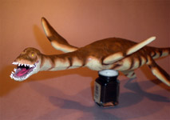
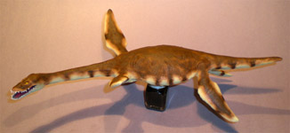
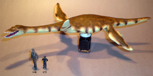
Next is some little detail work like painting the exterior side of the teeth white and doing the eyes. Lastly is a black sludge wash and a coat of Future floor polish. The creature is done but the base still needs to be finished. Here I started with a base coat of dark sea gray then started dry brushing lighter colors across it. I also used a blend of black and brown washes to finish the job. I had hoped to use a piece of acrylic rod to support the creature but could not find any in the stash (can you believe that!?!) so ultimately settled on a piece of aluminum tubing.
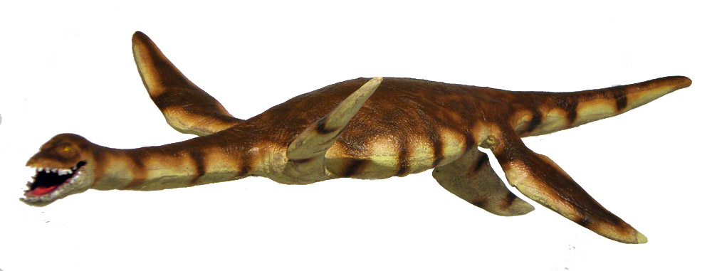
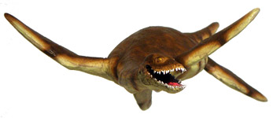
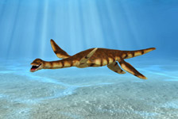
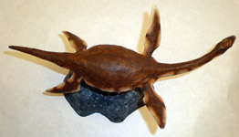
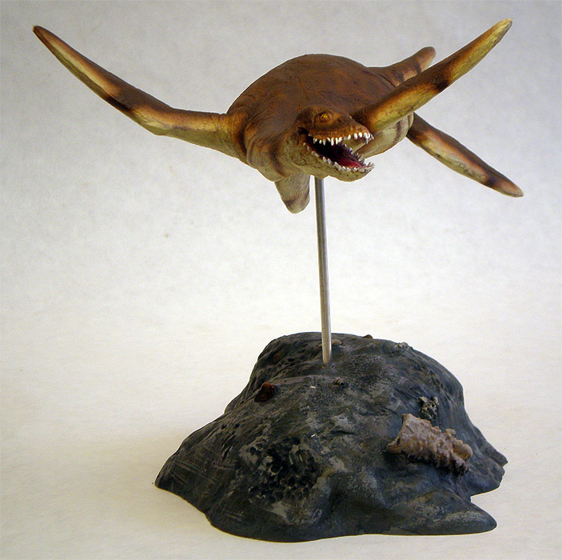
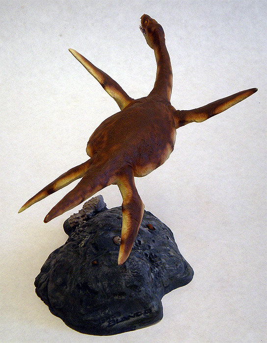
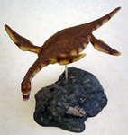
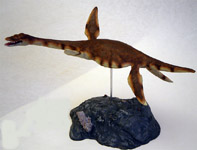
|


{kind=link}
{kind=link}
{kind=link}
{kind=link}
{kind=link}
{kind=link}
{kind=link}
{kind=link}